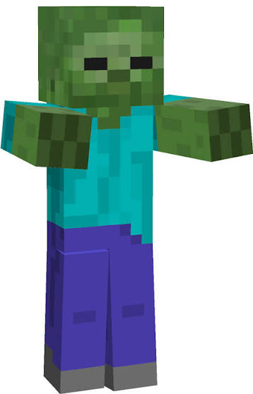
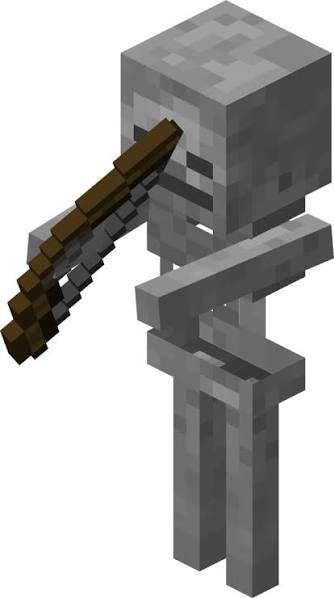
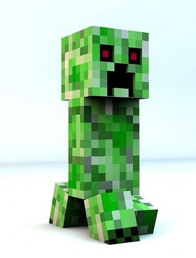
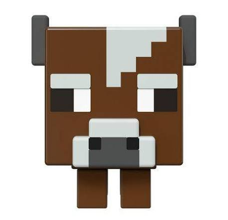

Hostile and Friendly Mobs
The Minecraft world is home to many different creatures (mobs), divided into friendly mobs (which do not attack players) and hostile mobs (which mostly appear at night or in dark places).

Zombie
A hostile mob that appears at night, moves slowly but attacks in groups.

Skeleton
Attacks from a distance with a bow, often found in dark caves.

Creeper
A silent mob that sneaks up on players and explodes, dealing heavy damage up close.

Cow
A friendly mob that provides players with meat and milk.